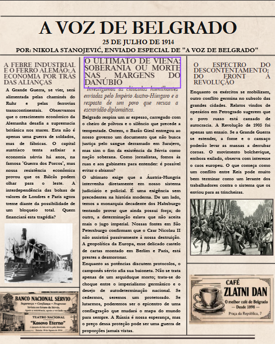
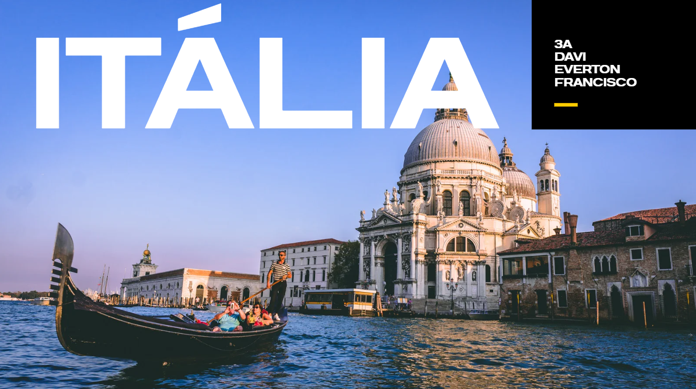
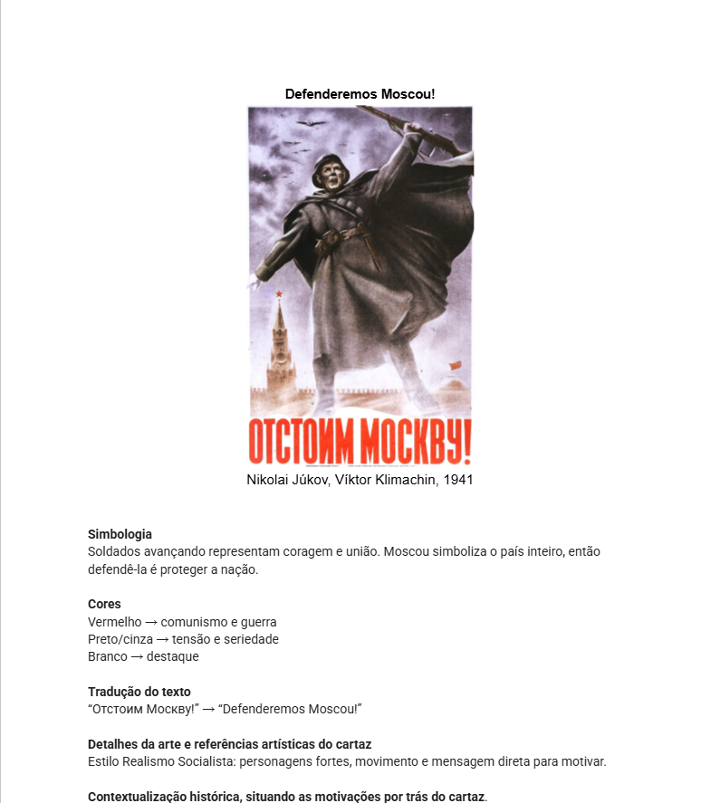

Atividades e Projetos de Pesquisa

Reflexão sobre os meios de comunicação na virada do século XX com a produção de uma capa de jornal de época. Assumindo o papel de um jornalista histórico e pesquisando em plataformas interativas, criamos matérias com fontes históricas e dados reais, contextualizando os aspectos políticos, econômicos e culturais entre 1900 e 1920.
Competências e habilidades trabalhadas: C3, H15, H16, H20, C6 e H39.
ACESSAR ATIVIDADE
Estudo introdutório sobre geopolítica utilizando jogos online interativos para estimular o conhecimento geográfico global. Em seguida, desenvolvemos apresentações em dupla sobre um país específico, utilizando dados atualizados para comparar diferentes realidades entre nações e compreender suas condições políticas, econômicas e sociais.
Competências e habilidades trabalhadas: C1, H1, H2, H3, H4 e H5.
ACESSAR APRESENTAÇÃO
Análise histórica e teórica sobre o marxismo e a Revolução Russa através da semiótica. A atividade consiste na interpretação de cartazes de propaganda soviética, utilizando ferramentas de design para identificar simbologias, contextos políticos e a estética do Realismo Socialista como ferramenta de mobilização social.
Competências e habilidades: C3, H15, H16; C4, H21, H23; C6, H40..
ACESSAR LINHA DO TEMPO